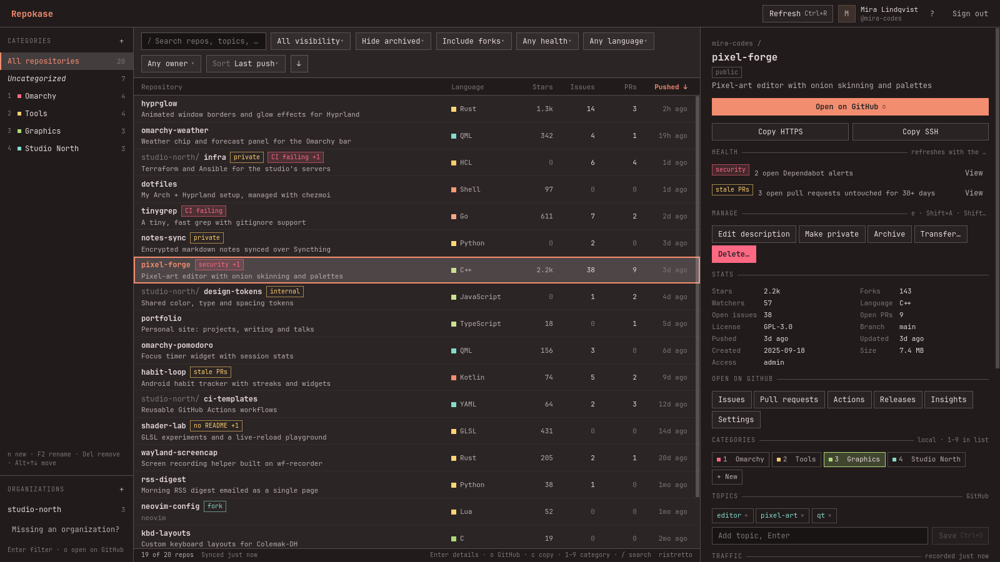

お任せ omakase · for your GitHub
Your repos,
chef's choice.
Repokase is a native Omarchy app that sets every GitHub repository you own, collaborate on, or reach through an organization out on one counter: stats, CI, health and traffic, with actions a keystroke away and no browser tabs.
sudo pacman -U https://github.com/ninepointlabs/repokase/releases/download/v0.2.2/repokase-0.2.2-1-any.pkg.tar.zst
v0.2.2 · Arch / Omarchy · MIT · release notes

now passing · plate rims show health
- hyprglowRust · 1.3k ★
- habit-loopstale PRs
- studio-north/infraCI failing
- omarchy-weatherQML · 342 ★
- tinygrepCI failing
- dotfilesShell · 97 ★
- shader-labno README
- design-tokensinternal
- pixel-forgesecurity
- rss-digestPython · 38 ★
- kbd-layoutsC · 19 ★
- notes-syncprivate
- healthy
- needs a look
- failing or alerts
chopsticks · no mouse required
Eat with your keyboard
- jk
- move through the list
- /
- search
- Enter
- details
- o
- open on GitHub
- c
- copy URL
- 1–9
- toggle a category
- e
- edit description
- ShiftA
- archive
- ShiftV
- visibility
- ShiftT
- transfer
- x
- mark for bulk
- CtrlR
- refresh
kitchen rules · what happens to your data
An open kitchen
Your token stays in the keyring
Sign in with GitHub's device flow: Repokase never sees your password and has no client secret. The token lives only in the Secret Service keyring, never in a file or a log.
Only GitHub, nothing else
Nothing is sent anywhere except
github.comandapi.github.com. No telemetry, no accounts, no server of ours.Minimal permissions
read:org,read:user,repoandworkflowat sign-in.delete_repoonly the first time you delete something, after Repokase explains why.A cache you can throw away
Repos, runs, categories and traffic live in one SQLite file under
~/.local/share/repokase. Delete it any time; the next refresh rebuilds what came from GitHub.
take a seat
Install
From a release
A ready-built Arch package. pacman pulls the dependencies from the official repos.
sudo pacman -U https://github.com/ninepointlabs/repokase/releases/download/v0.2.2/repokase-0.2.2-1-any.pkg.tar.zst
From source
Builds the tagged release, checks its checksum and runs the tests.
git clone https://github.com/ninepointlabs/repokase
cd repokase/packaging
makepkg -siThen
Launch Repokase from the app launcher, press Enter to sign in,
and approve the code on GitHub. You need a Secret Service keyring:
gnome-keyring ships with Omarchy.